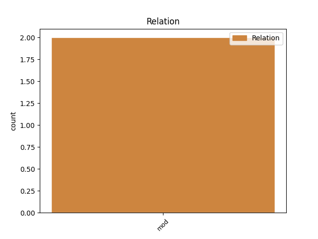
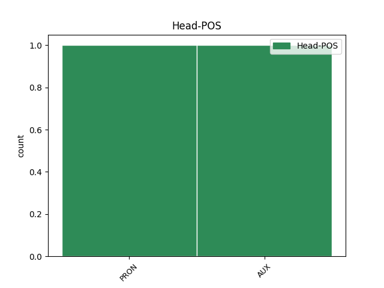
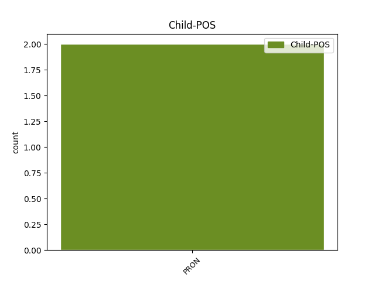

Distribution of features within this leaf



Agreement Rules sorted by frequency.
- When the dependent token is the modifer(mod) of the head token, and the head token is AUX and the dependent token is PRON.
1 Ο _ _ _ _ 0 _ _ _
2 χειρότερος _ _ _ _ 0 _ _ _
3 σεισμός _ _ _ _ 0 _ _ _
4 των _ _ _ _ 0 _ _ _
5 τελευταίων _ _ _ _ 0 _ _ _
6 30 _ _ _ _ 0 _ _ _
7 ετών _ _ _ _ 0 _ _ _
8 σ _ _ _ _ 0 _ _ _
9 την _ _ _ _ 0 _ _ _
10 Ιταλία _ _ _ _ 0 _ _ _
11 αφήνει _ _ _ _ 0 _ _ _
12 σεισμόπληκτους _ _ _ _ 0 _ _ _
13 σε _ _ _ _ 0 _ _ _
14 26 _ _ _ _ 0 _ _ _
15 πόλεις _ _ _ _ 0 _ _ _
16 και _ _ _ _ 0 _ _ _
17 χωριά _ _ _ _ 0 _ _ _
18 , _ _ _ _ 0 _ _ _
19 εκατοντάδες _ _ _ _ 0 _ _ _
20 τραυματίες _ _ _ _ 0 _ _ _
21 σ _ _ _ _ 0 _ _ _
22 το _ _ _ _ 0 _ _ _
23 νοσοκομείο _ _ _ _ 0 _ _ _
24 της _ _ _ _ 0 _ _ _
25 πόλης _ _ _ _ 0 _ _ _
26 , _ _ _ _ 0 _ _ _
27 που _ _ _ _ 0 _ _ _
28 και _ _ _ _ 0 _ _ _
29 αυτό αυτός PRON PRON Case=Nom|Gender=Neut|Number=Sing|Person=3|PronType=Dem 30 mod _ _
30 έχει έχω AUX AUX Aspect=Imp|Mood=Ind|Number=Sing|Person=3|Tense=Pres|VerbForm=Fin|Voice=Act 0 _ _ _
31 υποστεί _ _ _ _ 0 _ _ _
32 ζημιές _ _ _ _ 0 _ _ _
33 και _ _ _ _ 0 _ _ _
34 κάπου _ _ _ _ 0 _ _ _
35 15.000 _ _ _ _ 0 _ _ _
36 « _ _ _ _ 0 _ _ _
37 κόκκινα _ _ _ _ 0 _ _ _
38 » _ _ _ _ 0 _ _ _
39 κτίρια _ _ _ _ 0 _ _ _
40 . _ _ _ _ 0 _ _ _
Disagree Examples:
1 Ευχόμαστε _ _ _ _ 0 _ _ _
2 να _ _ _ _ 0 _ _ _
3 μπορέσουν _ _ _ _ 0 _ _ _
4 να _ _ _ _ 0 _ _ _
5 συζητηθούν _ _ _ _ 0 _ _ _
6 εκεί _ _ _ _ 0 _ _ _
7 , _ _ _ _ 0 _ _ _
8 θεωρώντας _ _ _ _ 0 _ _ _
9 ότι _ _ _ _ 0 _ _ _
10 θα _ _ _ _ 0 _ _ _
11 έχουν _ _ _ _ 0 _ _ _
12 ήδη _ _ _ _ 0 _ _ _
13 πραγματοποιηθεί _ _ _ _ 0 _ _ _
14 , _ _ _ _ 0 _ _ _
15 οι _ _ _ _ 0 _ _ _
16 διαδικασίες _ _ _ _ 0 _ _ _
17 που _ _ _ _ 0 _ _ _
18 αναφέρθηκαν _ _ _ _ 0 _ _ _
19 προηγουμένως _ _ _ _ 0 _ _ _
20 και _ _ _ _ 0 _ _ _
21 να _ _ _ _ 0 _ _ _
22 μπορέσουμε _ _ _ _ 0 _ _ _
23 να _ _ _ _ 0 _ _ _
24 βρούμε _ _ _ _ 0 _ _ _
25 και _ _ _ _ 0 _ _ _
26 με _ _ _ _ 0 _ _ _
27 τους _ _ _ _ 0 _ _ _
28 πολίτες _ _ _ _ 0 _ _ _
29 της _ _ _ _ 0 _ _ _
30 Ερυθραίας _ _ _ _ 0 _ _ _
31 τον _ _ _ _ 0 _ _ _
32 τρόπο _ _ _ _ 0 _ _ _
33 να _ _ _ _ 0 _ _ _
34 ξεκινήσουμε _ _ _ _ 0 _ _ _
35 την _ _ _ _ 0 _ _ _
36 ειρηνευτική _ _ _ _ 0 _ _ _
37 διαδικασία _ _ _ _ 0 _ _ _
38 , _ _ _ _ 0 _ _ _
39 να _ _ _ _ 0 _ _ _
40 αποκατασταθεί _ _ _ _ 0 _ _ _
41 η _ _ _ _ 0 _ _ _
42 δημοκρατία _ _ _ _ 0 _ _ _
43 και _ _ _ _ 0 _ _ _
44 ιδιαίτερα _ _ _ _ 0 _ _ _
45 να _ _ _ _ 0 _ _ _
46 αποδοθούν _ _ _ _ 0 _ _ _
47 εκ _ _ _ _ 0 _ _ _
48 νέου _ _ _ _ 0 _ _ _
49 σ _ _ _ _ 0 _ _ _
50 τους _ _ _ _ 0 _ _ _
51 πολίτες _ _ _ _ 0 _ _ _
52 , _ _ _ _ 0 _ _ _
53 γυναίκες _ _ _ _ 0 _ _ _
54 , _ _ _ _ 0 _ _ _
55 άνδρες _ _ _ _ 0 _ _ _
56 και _ _ _ _ 0 _ _ _
57 παιδιά _ _ _ _ 0 _ _ _
58 , _ _ _ _ 0 _ _ _
59 συνθήκες _ _ _ _ 0 _ _ _
60 ζωής _ _ _ _ 0 _ _ _
61 αποδεκτές _ _ _ _ 0 _ _ _
62 , _ _ _ _ 0 _ _ _
63 συνθήκες _ _ _ _ 0 _ _ _
64 για _ _ _ _ 0 _ _ _
65 τις _ _ _ _ 0 _ _ _
66 οποίες _ _ _ _ 0 _ _ _
67 κανείς κανένας PRON PRON Case=Nom|Gender=Masc|Number=Sing|Person=3|PronType=Ind 0 _ _ _
68 μας μου PRON PRON Case=Gen|Gender=Masc|Number=Plur|Person=1|Poss=Yes|PronType=Prs 67 mod _ _
69 δεν _ _ _ _ 0 _ _ _
70 θα _ _ _ _ 0 _ _ _
71 πρέπει _ _ _ _ 0 _ _ _
72 να _ _ _ _ 0 _ _ _
73 ντρέπεται _ _ _ _ 0 _ _ _
74 . _ _ _ _ 0 _ _ _